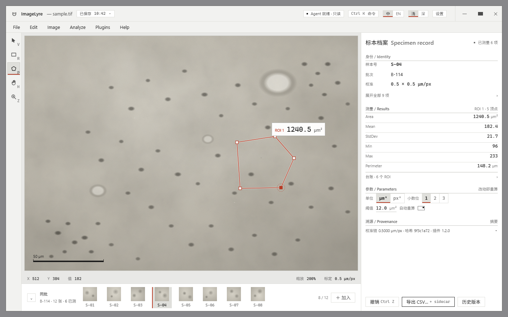
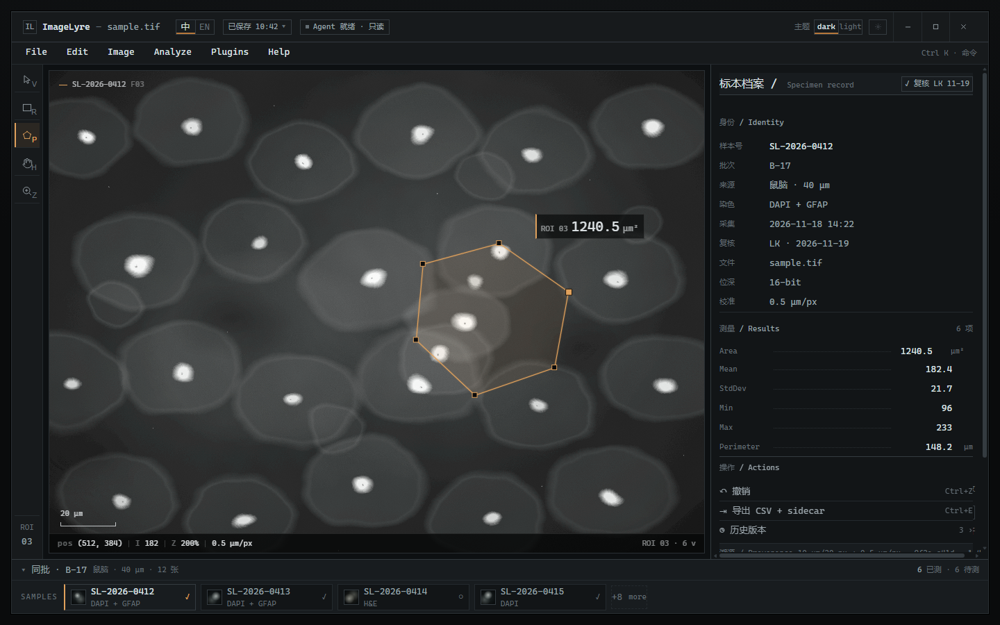
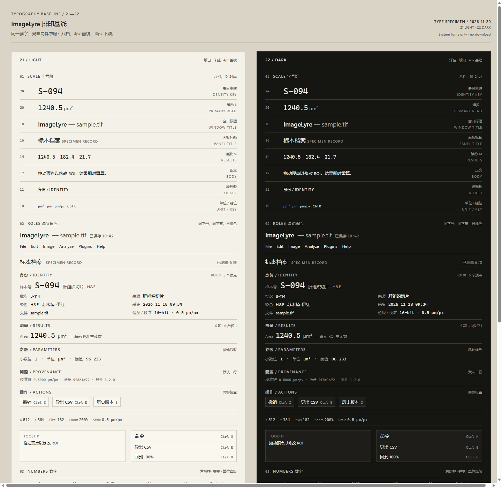
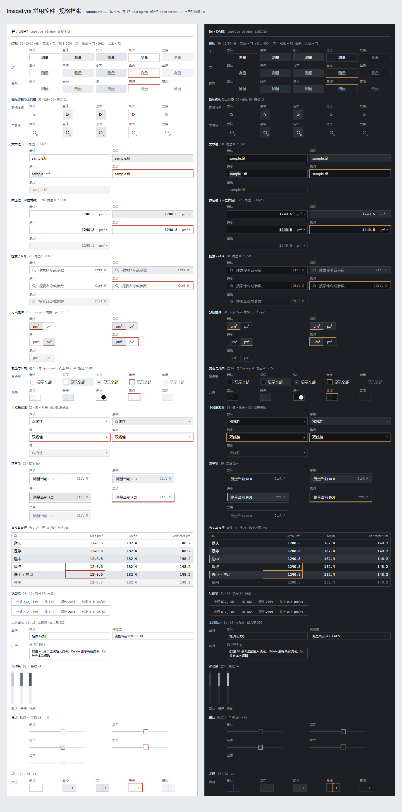

01结论
先看这一屏，后面的都是证据。
02外观：第一直觉
来源：product-appearance.md；它管气质，不管色值与控件。
像一张被灯照亮的实验台：样本是唯一发光的东西，工具伸手可及，其余都安静地退到暗处。
两条前提
- 桌面软件，不是网页；Windows 首发，三端共用设计。
- 与 ImageJ 有渊源，但必须超越：老锚点保留，房间更安静。
五个外观决定
- 样本最大；界面不比样本更亮。
- 只有一处发光：一个信号色，只给当前与运行。
- 像玻璃与纸，不像塑料：细线、留白、明度。
- 数字是读数：等宽、右对齐、单位降级。
- 动效只解释空间。
反面清单
- 医疗监护仪式仪表盘、Web 后台卡片墙。
- 复古示波器、金属拉丝、纸张纹理。
- 游戏 HUD、发光边框、扫描线。
- AI 聊天侧栏占画布、蓝紫渐变科技感。
- 用黑底反白表示选中、用色块表示当前。
检验
- 三秒测试、遮标测试、关闭测试、迁移测试、截图测试。
03三十版：从自由到语法
六位设计师，三轮，两种主题；编号见 versions.md。
| 阶段 | 编号 | 做了什么 | 结论 |
|---|---|---|---|
| 第一轮 | 01–06 | 同题同骨架，六种气质 | 看出风格差异，但布局被限定死 |
| 第二轮 | 07–12 | 只给任务，不给位置 | 读数跟着选区走、引线、菜单退场 |
| 第三轮 | 13–18 | 换道：IT 科技 / Photoshop / 取景器 / 标本册 | C3 太像 Photoshop，弃；A3 溯源 + E3 档案胜出 |
| 合体 | 19–20 | A3 与 E3 各出一版合体 | 确定「标本档案」骨架 |
| 统一骨架 | 21–24 | 亮暗同构，补语言 / Agent / 历史 | P0 关闭；排印落地 |
| 间距落地 | 25–27 | 4px 与六级间距，身份折叠 | 亮色跑通；暗色差 68px |
| 去复古 | 28–30 | 中性表面、选中改标、信号标随轴 | 30 成为当前亮色基准 |


04排印：四档
来源：typography.md 2.0；只在系统字体里选，不下载字体。
| 字号 / 行高 | 用途 | 字重 |
|---|---|---|
| 20 / 28 | 主读数，一屏一个 | 等宽 400 |
| 16 / 24 | 面板标题 | 拉丁 600 / 中文 400 |
| 13 / 20 | 正文、菜单、六项读数、按钮、窗口标题 | 400；标题拉丁 600 |
| 11 / 16 | 标签、段标题、表头、单位、状态、快捷键 | 400；段标题拉丁 600 |
中文只有 400（YaHei 的 500 落 400、600 落 700）；拉丁 500 与 600 同笔画，所以不拿字重分两级。数字等宽、右对齐、列内禁千分位，CSV 与界面精度一致。

05间距：4px 与六级
来源：spacing.md；所有 padding / gap / 高度都能指回一个 token。
| Token | 值 | 用在哪 |
|---|---|---|
space.pair | 4 | 图标与文字、标签与值 |
space.control | 8 | 相邻控件、字段上下 |
space.inset | 12 | 按钮左右、段距（紧凑） |
space.panel | 16 | 面板内边、标题左右 |
space.section | 24 | 跨区段 |
space.major | 32 | 空态、命令面板分组 |
区域：标题 44、菜单 32、左轨 44、右栏 400（可拖 320–560，步长 8）、批次 78、状态 28。右栏用紧凑密度：面板内边 12、段距 12，行高仍 28。
06颜色：18 个语义 token
来源：color-tokens.md 1.3；明暗同构，一屏只有一处「当前」。
| 层 | 亮 | 暗 | 用途 |
|---|---|---|---|
| surface.window | #F5F6F8 | #15171A | 窗口、标题、菜单、状态 |
| surface.panel | #FFFFFF | #1C1F23 | 面板、浮层 |
| surface.canvas | #E8EAED | #0D0F11 | 画布台面 |
| text.t1 | #141619 | #E9ECEF | 正文、读数、标题 |
| text.t2 | #4C5259 | #B5BBC2 | 字段值、状态 |
| text.t3 | #6A717A | #8C939B | 标签、单位、脚注 |
| signal | #B83A24 | #D89A4A | 只做 2px 线与标 |
正文最低 6.3:1，弱化 3.9:1，焦点 5.7:1；signal 不做文字色、不做填充、不做反白。选中底为 #E2E6EA（亮）/ #2E333A（暗）。
07状态语言：五态五通道
来源：state-model.md；状态是语法，控件只是形状。
| 状态 | 回答 | 唯一画法 |
|---|---|---|
| 当前 | 画面里谁在被操作 | 沿形 2px 线 |
| 选中 | 命令将作用于谁 | 轴上的 2px 轨 + 一档中性底 |
| 焦点 | 键盘落在哪 | 贴底下划线 1px |
| 悬停 | 指针经过谁 | 只换底，不画线 |
| 编辑 | 正在输入什么 | 光标 + 字段下划线 |
叠加优先级：编辑 > 焦点 > 选中 > 悬停；同一元素最多两条线。三条不做：不做整行外框、不做色字、不做填充块。
二元选择没有开关。设置用复选框，菜单用勾选，行内参数用两段式分段；界面里不出现轨道与旋钮。
08控件：只选形状，不造规则
来源：controls.md 1.1；尺寸引 spacing，颜色引 color-tokens，状态引 state-model。

层级只靠三样
- 线：主按钮 1px border，次按钮 1px divider，静默无线。
- 底：悬停只换底；选中用一档中性底。
- 字：T1 / T2 / T3；signal 永不染字。
表格
- 选中：左沿 2px + 选中底，文字不动。
- 焦点：当前行底边 1px，不画单元格框。
- 编辑：单元格光标 + 该格底边 1px。
- 选中 + 焦点：一轨一线并存。
09交接与未决
设计只定数值、角色与验收；实现归架构。
| 项 | 归属 | 状态 |
|---|---|---|
| 暗色主题收口（差 68px） | 设计 | 未完成：按 30 结构，参数两列 + 展开入口并进段头 |
| 排印 / 间距 / 颜色 / 控件落地 | 架构 | Avalonia 资源键、字体回退、AtomUI 令牌钉死、缩放机制 |
| Avalonia 编译与真机验证 | 架构 | SDK 10.0.404、App 还原、Cangming 包缓存 |
| 交互流（打开→ROI→读数→导出→撤销） | 设计 | 未开始 |
来源文件：typography.md、spacing.md、color-tokens.md、state-model.md、controls.md、versions.md、product-appearance.md，均在 docs/design/lukan/bakeoff-2026-11-20/。